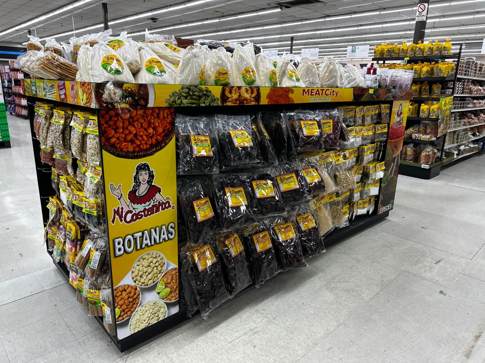
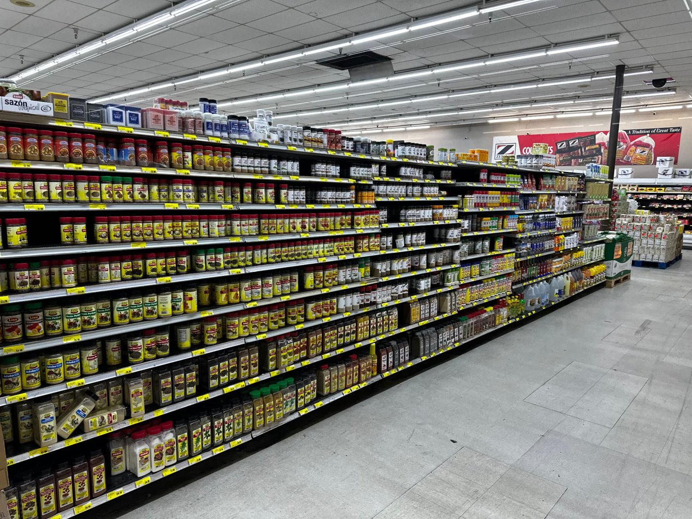

✦ Especias · now on the shelves


Mexican spices 🌶️
Two whole displays of dried chiles, spices, herbs and teas from Mi Costeñita and Órale!. Everything you need for salsa, mole, pozole, tamales and more.


What you'll find
🌶️
bring the heat
Dried chiles
- Guajillomild & fruity
- Anchosweet & smoky
- New Mexicoearthy, gentle heat
- Chile de árbolhot & sharp
- Puyabright & spicy
- Chiltepíntiny but fiery
🫙
whole or ground
Spices & herbs
- Cominowarm & earthy
- Canela enterasweet cinnamon sticks
- Anís estrellalicorice-sweet
- Ajo granuladotoasty garlic
- Laurelbay leaf, herbal
- Epazotebold, for beans
- Tomillothyme, woodsy
- Ajonjolísesame, nutty
- Birria & menudo mixready-to-go blends
- Adobo & sazónall-purpose seasoning
🍵
abuela approved
Teas & kitchen extras
- Flor de manzanillacalming chamomile
- Hierbabuenacool mint
- Flor de Jamaicatart hibiscus
- Té de limónlemongrass, citrusy
- Rosa de Castillasoft & floral
- Hoja para tamalcorn husks for tamales
- Pepitaspumpkin seeds
And lots more on the racks. Come browse in person!